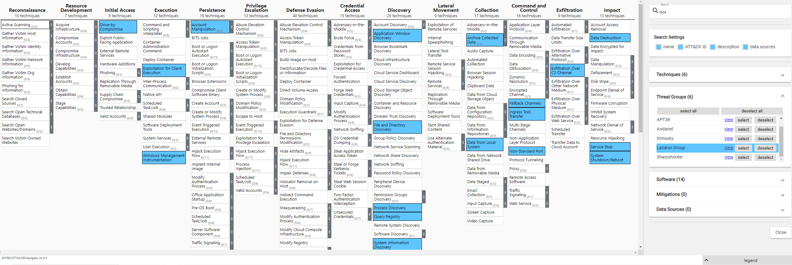

02 SECURITY OPERATIONS AND INCIDENT MANAGEMENT
Contents
02 SECURITY OPERATIONS AND INCIDENT MANAGEMENT¶
Often in cyber security, we refer to the red team the and blue team. Red team are seen as the offensive team. They are the real-world attackers, or penetration testers who are acting in this offensive capacity trying to break into our systems to obtain confidential information or to gain illegitimate access. Blue team are the defenders, trying to protect our organisational and operational infrastructure. As a game that pits attackers vs defenders, blue teams have a massive challenge to contend with. Blue teams want to successfully defend their systems against a whole range of attacks. Red teams only need to be successful with their attacks once to go on a potentially cause major problems for an organisation.
In this section, we will cover:
Security Operations Centres - how the blue team operate.
Common blue team methodologies.
Access controls.
Security Operations and Incident Management (SOIM) can be described in the context of MAPE-K: Monitor, Analyse, Plan, Execute - Knowledge.
Intrusion Detection Systems (IDS) provide the ability to monitor and analyse data.
Security Information and Event Management (SIEM) systems provide the ability to also plan.
More recently, Security Orchestration and Automated Response (SOAR) tools have started to introduce automation in the cycle.
Security Operations Centre¶
A Security Operation Center (SOC) is a centralized function within an organization employing people, processes, and technology to continuously monitor and improve an organization’s security posture while preventing, detecting, analyzing, and responding to cybersecurity incidents.
A SOC acts like the hub or central command post, taking in telemetry from across an organization’s IT infrastructure, including its networks, devices, appliances, and information stores, wherever those assets reside. The proliferation of advanced threats places a premium on collecting context from diverse sources. Essentially, the SOC is the correlation point for every event logged within the organization that is being monitored. For each of these events, the SOC must decide how they will be managed and acted upon.
Security operations staffing and organizational structure¶
The function of a security operations team and, frequently, of a security operations center (SOC), is to monitor, detect, investigate, and respond to cyberthreats around the clock. Security operations teams are charged with monitoring and protecting many assets, such as intellectual property, personnel data, business systems, and brand integrity. As the implementation component of an organization’s overall cybersecurity framework, security operations teams act as the central point of collaboration in coordinated efforts to monitor, assess, and defend against cyberattacks.
SOCs have been typically built around a hub-and-spoke architecture, where a security information and event management (SIEM) system aggregates and correlates data from security feeds. Spokes of this model can incorporate a variety of systems, such as vulnerability assessment solutions, governance, risk and compliance (GRC) systems, application and database scanners, intrusion prevention systems (IPS), user and entity behavior analytics (UEBA), endpoint detection and remediation (EDR), and threat intelligence platforms (TIP).
The SOC is usually led by a SOC manager, and may include incident responders, SOC Analysts (levels 1, 2 and 3), threat hunters and incident response manager(s). The SOC reports to the CISO, who in turn reports to either the CIO or directly to the CEO.
10 key functions performed by the SOC¶
1. Take Stock of Available Resources The SOC is responsible for two types of assets—the various devices, processes and applications they’re charged with safeguarding, and the defensive tools at their disposal to help ensure this protection.
What The SOC Protects The SOC can’t safeguard devices and data they can’t see. Without visibility and control from device to the cloud, there are likely to be blind spots in the network security posture that can be found and exploited. So the SOC’s goal is to gain a complete view of the business’ threat landscape, including not only the various types of endpoints, servers and software on premises, but also third-party services and traffic flowing between these assets.
How The SOC Protects The SOC should also have a complete understanding of all cybersecurity tools on hand and all workflows in use within the SOC. This increases agility and allows the SOC to run at peak efficiency.
2. Preparation and Preventative Maintenance Even the most well-equipped and agile response processes are no match for preventing problems from occurring in the first place. To help keep attackers at bay, the SOC implements preventative measures, which can be divided into two main categories.
Preparation Team members should stay informed on the newest security innovations, the latest trends in cybercrime and the development of new threats on the horizon. This research can help inform the creation a security roadmap that will provide direction for the company’s cybersecurity efforts going forward, and a disaster recovery plan that will serve as ready guidance in a worst-case scenario.
Preventative Maintenance This step includes all actions taken to make successful attacks more difficult, including regularly maintaining and updating existing systems; updating firewall policies; patching vulnerabilities; and whitelisting, blacklisting and securing applications.
3. Continuous Proactive Monitoring Tools used by the SOC scan the network 24/7 to flag any abnormalities or suspicious activities. Monitoring the network around the clock allows the SOC to be notified immediately of emerging threats, giving them the best chance to prevent or mitigate harm. Monitoring tools can include a SIEM or an EDR, the most advanced of which can use behavioral analysis to “teach” systems the difference between regular day-to-day operations and actual threat behavior, minimizing the amount of triage and analysis that must be done by humans.
4. Alert Ranking and Management When monitoring tools issue alerts, it is the responsibility of the SOC to look closely at each one, discard any false positives, and determine how aggressive any actual threats are and what they could be targeting. This allows them to triage emerging threats appropriately, handling the most urgent issues first.
5. Threat Response These are the actions most people think of when they think of the SOC. As soon as an incident is confirmed, the SOC acts as first responder, performing actions like shutting down or isolating endpoints, terminating harmful processes (or preventing them from executing), deleting files, and more. The goal is to respond to the extent necessary while having as small an impact on business continuity as possible.
6. Recovery and Remediation In the aftermath of an incident, the SOC will work to restore systems and recover any lost or compromised data. This may include wiping and restarting endpoints, reconfiguring systems or, in the case of ransomware attacks, deploying viable backups in order to circumvent the ransomware. When successful, this step will return the network to the state it was in prior to the incident.
7. Log Management The SOC is responsible for collecting, maintaining, and regularly reviewing the log of all network activity and communications for the entire organization. This data helps define a baseline for “normal” network activity, can reveal the existence of threats, and can be used for remediation and forensics in the aftermath of an incident. Many SOCs use a SIEM to aggregate and correlate the data feeds from applications, firewalls, operating systems and endpoints, all of which produce their own internal logs.
8. Root Cause Investigation In the aftermath of an incident, the SOC is responsible for figuring out exactly what happened when, how and why. During this investigation, the SOC uses log data and other information to trace the problem to its source, which will help them prevent similar problems from occurring in the future.
9. Security Refinement and Improvement Cybercriminals are constantly refining their tools and tactics—and in order to stay ahead of them, the SOC needs to implement improvements on a continuous basis. During this step, the plans outlined in the Security Road Map come to life, but this refinement can also include hands-on practices such as red-teaming and purple-teaming.
10. Compliance Management Many of the SOC’s processes are guided by established best practices, but some are governed by compliance requirements. The SOC is responsible for regularly auditing their systems to ensure compliance with such regulations, which may be issued by their organization, by their industry, or by governing bodies. Examples of these regulations include GDPR, HIPAA, and PCI DSS. Acting in accordance with these regulations not only helps safeguard the sensitive data that the company has been entrusted with—it can also shield the organization from reputational damage and legal challenges resulting from a breach.
https://www.mcafee.com/enterprise/en-us/security-awareness/operations/what-is-soc.html
MITRE ATT&CK¶
MITRE ATT&CK (Adversarial Tactics, Techniques, and Common Knowledge) is a globally-accessible knowledge base of adversary tactics and techniques based on real-world observations. The ATT&CK knowledge base is used as a foundation for the development of specific threat models and methodologies in the private sector, in government, and in the cybersecurity product and service community. MITRE ATT&CK was created in 2013 as a result of MITRE’s Fort Meade Experiment (FMX) where researchers emulated both adversary and defender behavior in an effort to improve post-compromise detection of threats through telemetry sensing and behavioral analysis. The key question for the researchers was “How well are we doing at detecting documented adversary behavior?” To answer that question, the researchers developed ATT&CK, which was used as a tool to categorize adversary behavior. More detail…
Common Terminology¶
APT is an acronym for Advanced Persistent Threat. This can be considered a team/group (threat group), or even country (nation-state group), that engages in long-term attacks against organizations and/or countries. The term ‘advanced’ can be misleading as it will tend to cause us to believe that each APT group all have some super-weapon, e.i. a zero-day exploit, that they use. That is not the case. As we will see a bit later, the techniques these APT groups use are quite common and can be detected with the right implementations in place. You can view FireEye’s current list of APT groups here.
TTP is an acronym for Tactics, Techniques, and Procedures, but what does each of these terms mean?
The Tactic is the adversary’s goal or objective.
The Technique is how the adversary achieves the goal or objective.
The Procedure is how the technique is executed.
MITRE established the CVE (Common Vulnerabilities and Exposures) Program back in 1999, where their mission is to identify, define, and catalog publicly disclosed cybersecurity vulnerabilities. The database can be accessed online at https://cve.mitre.org/. Further sources exist nowadays, including https://www.cvedetails.com/ that also reports the Common Vulnerability Scoring System (CVSS). All new vulnerabilities are assigned a CVE reference, for example, the EternalBlue vulnerability is recorded as CVE-2017-0144. We can find further detail in the original CVE database, or alternatively, we can search a richer database such as the NIST National Vulnerability Database based in the USA: https://nvd.nist.gov/vuln/detail/CVE-2017-0144.
What is in the MITRE ATT&CK Matrix?¶
The MITRE ATT&CK matrix contains a set of techniques used by adversaries to accomplish a specific objective. Those objectives are categorized as tactics in the ATT&CK Matrix. The objectives are presented linearly from the point of reconnaissance to the final goal of exfiltration or “impact”. Looking at the broadest version of ATT&CK for Enterprise, which includes Windows, MacOS, Linux, AWS, GCP, Azure, Azure AD, Office 365, SaaS, and Network environments, the following adversary tactics are categorized:
Reconnaissance: gathering information to plan future adversary operations, i.e., information about the target organization
Resource Development: establishing resources to support operations, i.e., setting up command and control infrastructure
Initial Access: trying to get into your network, i.e., spear phishing
Execution: trying the run malicious code, i.e., running a remote access tool
Persistence: trying to maintain their foothold, i.e., changing configurations
Privilege Escalation: trying to gain higher-level permissions, i.e., leveraging a vulnerability to elevate access
Defense Evasion: trying to avoid being detected, i.e., using trusted processes to hide malware
Credential Access: stealing accounts names and passwords, i.e., keylogging
Discovery: trying to figure out your environment, i.e., exploring what they can control
Lateral Movement: moving through your environment, i.e., using legitimate credentials to pivot through multiple systems
Collection: gathering data of interest to the adversary goal, i.e., accessing data in cloud storage
Command and Control: communicating with compromised systems to control them, i.e., mimicking normal web traffic to communicate with a victim network
Exfiltration: stealing data, i.e., transfer data to cloud account
Impact: manipulate, interrupt, or destroy systems and data, i.e., encrypting data with ransomware
Within each tactic of the MITRE ATT&CK matrix there are adversary techniques, which describe the actual activity carried out by the adversary. Some techniques have sub-techniques that explain how an adversary carries out a specific technique in greater detail.

Here we can see at a glance all of the attributes that a threat group (“Lazarus group”) map against.
From here, we can delve into the detail about a threat group - https://attack.mitre.org/groups/G0032/
If we explore the “File and Directory Discovery” as highlighted in the “Discovery” column, we can right-click to “view techniques” or “view tactic”.
Technique - https://attack.mitre.org/techniques/T1083/ - if we search for Lazarus we can find the following: Several Lazarus Group malware samples use a common function to identify target files by their extension. Lazarus Group malware families can also enumerate files and directories, including a Destover-like variant that lists files and gathers information for all drives.
Exploring the threat actor further, we can see what software is attributed to them, and the corresponding techniques used by these software tools. Here, we can see that the infamous WannaCry ransomware is attributed to this threat actor.
Task
Explore MITRE ATT&CK and the ATT&CK Navigator.
What is the technique ID associated with software supply chain security?
What is the group associated with the Solarwinds attack?
What is the group that has compromised legitimate web browser updates?
Answer
The following page will be useful to address the above challenge: https://attack.mitre.org/techniques/T1195/002/
T1195
APT29
Cobalt Group
Cyber Analytics Repository¶
The MITRE Cyber Analytics Repository (CAR) is a knowledge base of analytics developed by MITRE based on the MITRE ATT&CK adversary model. CAR defines a data model that is leveraged in its pseudocode representations, but also includes implementations directly targeted at specific tools (e.g., Splunk, EQL) in its analytics. With respect to coverage, CAR is focused on providing a set of validated and well-explained analytics, in particular with regards to their operating theory and rationale.
We can look at an example submission: CAR-2021-05-010: Create local admin accounts using net exe. This example was submitted on 2021/05/11, and we see information related to platform, contributor, information domain and other useful data. This particular search looks for the creation of local administrator accounts using net.exe. The record also provides implementations and test cases for being able to reproduce the attack vector, and how this could be detected in popular SIEM tools such as Splunk.
As from the CAR webpages - “It’s important to remember that ATT&CK and CAR are separate projects for good reason. It’s critical to keep how we articulate threats with ATT&CK separate from a set of possible ways to detect them with the analytics. We don’t want the defender content in ATT&CK to be overly prescriptive about how someone can defend against ATT&CK techniques because there could be many different ways, and it’s up to the organization implementing them to determine what works best for their environment and the threats they face. This is why we didn’t put the analytics in ATT&CK to begin with. CAR is a good starting point for many organizations and can be a great platform for open analytic collaboration - but it isn’t the be-all/end-all for defending against the threats described by ATT&CK.”
Access Control¶
As an organisation grows in size, so does the IT estate being managed. Organisations often deploy Mobile Device Management (MDM) policies to be able to specify how devices perform, what access is granted to company resources, what users are entitled to use the devices, and many other configurations.
Active Directory¶
Active Directory is the directory service used by Windows domain networks. Think about a University campus network. Students and staff may need to log on to different machines around campus, including shared computers as well as machines that have been specifically assigned for them. User profiles will need to have specific read, write, and execute behaviours associated with them, essentially giving role-based access control across a large estate of Windows machines. Active Directory allows for the control and monitoring of user’s computers through a single domain controller. It means that no matter what machine a user logs in from, they can then access their files in the server, as well as local storage on the machine. Active Directory is the standard approach for many large organisations to manage their computing infrastructure.
Whilst AD has become widely adopted by many organisations, the origins stem back to Lightweight Directory Access Protocol (LDAP). This is an open and vendor-neutral protocol for accessing and maintaining distributed directory information services over an Internet Protocol.
LSASS¶
Local Security Authority Subsystem Service (LSASS) is the process on Microsoft Windows that handles all user authentication, password changes, creation of access tokens, and enforcement of security policies. This means the process stores multiple forms of hashed passwords, and in some instances even stores plaintext user passwords.
On LSASS, MITRE ATT&CK reports that adversaries may attempt to access credential material stored in the process memory of the Local Security Authority Subsystem Service (LSASS). After a user logs on, the system generates and stores a variety of credential materials in LSASS process memory. These credential materials can be harvested by an administrative user or SYSTEM and used to conduct Lateral Movement using Use Alternate Authentication Material.
A popular tool for accessing LSASS is Mimikatz. Mimikatz is an open-source application that allows users to view and save authentication credentials like Kerberos tickets. Benjamin Delpy continues to lead Mimikatz developments, so the toolset works with the current release of Windows and includes the most up-to-date attacks. Attackers commonly use Mimikatz to steal credentials and escalate privileges: in most cases, endpoint protection software and anti-virus systems will detect and delete it. Conversely, pentesters use Mimikatz to detect and exploit vulnerabilities in your networks so you can fix them. More details…